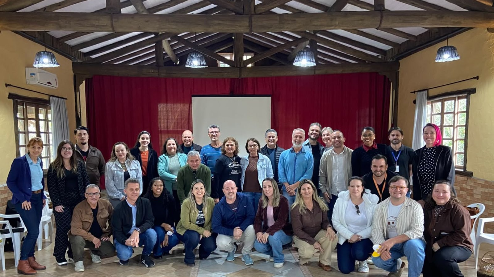

Itapema · Cultura
Itapema · CulturaItapema vai sediar a maior festa de cultura açoriana do Brasil em novembro
A edição de 2026 e o preparo que começou na escola.
A decisão saiu na reunião do Conselho Deliberativo do Núcleo de Estudos Açorianos da UFSC, em 16 de setembro. Bombinhas recebe a 33ª edição da festa em 2027. A 32ª é de Itapema, entre 20 e 22 de novembro deste ano, e a cidade já está se preparando. Quer dizer que a maior celebração da cultura açoriana das Américas, que existe desde 1994 e roda pelo litoral catarinense, fica duas edições seguidas na Costa Esmeralda. Bombinhas já sediou uma vez, a 22ª edição, em outubro de 2015.
Em 30 segundos · Modo de Leitura, formato original Santa Informa
Bombinhas vai sediar o Açor de 2027.
É a 33ª edição da festa.
A escolha foi em 16 de setembro.
Quem decidiu foi o Conselho Deliberativo do NEA.
O NEA é o Núcleo de Estudos Açorianos da UFSC.
O Açor é a maior festa açoriana das Américas.
Existe desde 1994.
Não tem sede fixa, roda pelo litoral catarinense.
A edição deste ano é de Itapema.
É a 32ª, de 20 a 22 de novembro.
Ou seja: a festa fica dois anos na região.
Primeiro Itapema, depois Bombinhas.
As duas cidades são vizinhas.
Bombinhas já tinha sediado antes.
Foi a 22ª edição, em outubro de 2015.
Na época, mais de 500 servidores da educação fizeram formação.
Porto Belo também já sediou, na 25ª.
Dá três cidades da Costa Esmeralda na lista.
Bombinhas se apresentou na 31ª, em Barra Velha.
Levou exposição de fotos e comida típica.
Quem cuida do preparo é a Fundação Municipal de Cultura.
O presidente é Luiz Felipe de Melo.
A Fundação promete formação para a rede de ensino.
A data de 2027 ainda não foi anunciada.
Novembro é o mês antes da temporada.
Festa grande nessa época enche hotel vazio.
TurismoPublicada em Redação Santa Informa

Bombinhas vai sediar o Açor de 2027, a 33ª edição da Festa da Cultura Açoriana de Santa Catarina. A escolha foi confirmada em 16 de setembro, na reunião do Conselho Deliberativo do Núcleo de Estudos Açorianos da UFSC, que organiza a festa. Isso coloca a maior celebração da cultura açoriana das Américas duas edições seguidas na Costa Esmeralda: a 32ª é de Itapema, entre 20 e 22 de novembro deste ano, e a seguinte fica no município vizinho, do outro lado da península.
O Açor existe desde 1994 e não tem sede fixa: cada ano fica com um município do litoral catarinense. Levantamos na galeria de edições do próprio Núcleo quais cidades da nossa região já receberam. Bombinhas sediou a 22ª edição, entre 2 e 4 de outubro de 2015, com grupos folclóricos, boi de mamão e danças açorianas. Porto Belo recebeu a 25ª. Com Itapema em novembro e Bombinhas em 2027, sobem para três os municípios da Costa Esmeralda na lista, e para quatro as edições.
A Prefeitura atribui a escolha ao trabalho contínuo da Fundação Municipal de Cultura de Bombinhas na preservação da herança açoriana. O município se apresentou na 31ª edição, em Barra Velha, em setembro de 2025, com exposição fotográfica e culinária típica. Para 2027, a Fundação, presidida por Luiz Felipe de Melo, prevê formações continuadas sobre açorianidade para a rede municipal de educação. Em 2015 a cidade capacitou mais de 500 servidores da educação com especialistas e historiadores antes de receber o evento.
A conta que interessa aqui é de calendário e de leito de hotel. O Açor acontece fora da temporada e junta delegações de dezenas de municípios, com hospedagem, alimentação e público de fora. Em Itapema a festa cai em novembro, o mês que antecede o verão, quando a rede hoteleira está com preço de baixa e estrutura sobrando. Dois anos seguidos na mesma faixa de litoral significa que o mesmo circuito de artesão, cozinheira, grupo de dança e guia de turismo tem trabalho em duas temporadas de preparação, e não em uma.
O resumo de 30 segundos está no topo e a versão completa é o texto acima. Aqui ficam as três leituras da casa sobre o mesmo assunto.
Clara, a otimista
Duas edições seguidas na mesma faixa de litoral é sorte que a região não costuma ter. O Açor não é festa de palco montado e desmontado: ele chega com meses de formação em escola, pesquisa de receita antiga, resgate de dança e de artesanato. Quem ganha com isso não é só quem vai no fim de semana da festa.
E tem o lado prático. A cultura açoriana é a base de tudo por aqui, do boi de mamão à renda de bilro, e é o que sobra de mais nosso numa região que virou canteiro de obras. Ter Itapema em novembro e Bombinhas no ano seguinte dá chance de a criança da rede municipal ouvir essa história duas vezes, e não uma.
Seu Prudêncio, o criterioso
Merece atenção o prazo. A escolha saiu com pouco mais de um ano de antecedência, o que é razoável, mas Bombinhas ainda não tem data, local nem orçamento anunciados. Evento estadual com delegações de dezenas de municípios pede definição de hospedagem, alimentação, transporte e estrutura de palco bem antes do ano da festa.
Vale acompanhar o modelo de 2015, que a própria Prefeitura cita como referência: mais de 500 servidores da educação capacitados antes do evento. Formação de professor tem calendário próprio e precisa entrar no planejamento escolar, não em cima da hora.
Uma sugestão útil, e ela vale mais para Itapema do que para Bombinhas neste momento: a edição de novembro está a dois meses e a programação ainda não saiu. Quem vende hospedagem e quem organiza delegação precisa da data fechada para reservar.
Dito isso, a escolha reconhece um trabalho que existe. Bombinhas mantém fundação de cultura ativa, levou exposição e comida típica para Barra Velha no ano passado e já provou que dá conta da festa. É decisão coerente com o que a cidade vem fazendo.
Caco, o sarcástico
A festa açoriana vai ficar dois anos rodando entre Itapema e Bombinhas, o que em termos de deslocamento é praticamente a mesma festa mudando de calçada. Quem for aos dois anos vai reconhecer meio mundo na plateia.
Perguntei a data da edição de 2027 e a resposta foi o silêncio de sempre. Perguntei a programação da de 2026, que é daqui a dois meses, e o silêncio veio de novo, só que mais perto.
Mas vou ser honesto: festa que enche hotel em novembro, quando o litoral está vazio e o hoteleiro olhando para o teto, é das melhores notícias que essa região podia receber. Que venham as duas.
Fontes: a escolha de Bombinhas, a data da reunião do Conselho Deliberativo do Núcleo de Estudos Açorianos da UFSC, a 22ª edição de 2015 entre 2 e 4 de outubro, a participação na 31ª edição em Barra Velha, o plano de formação continuada, o nome do presidente da Fundação Municipal de Cultura, Luiz Felipe de Melo, e os mais de 500 servidores capacitados em 2015 estão na nota Bombinhas é escolhida sede da 33ª edição do Açor em 2027, publicada pela Prefeitura de Bombinhas, de onde também vem a foto desta matéria. A relação das edições anteriores e das cidades que as sediaram, incluindo a 25ª em Porto Belo e a 22ª em Bombinhas, foi conferida na página do Açor no site do Núcleo de Estudos Açorianos da UFSC. As datas da 32ª edição em Itapema, de 20 a 22 de novembro de 2026, e o preparo da rede municipal de ensino estão na nossa matéria sobre a escolha de Itapema, de 11 de agosto de 2026. A contagem dos três municípios da Costa Esmeralda já escolhidos é conta nossa.
Itapema · CulturaA edição de 2026 e o preparo que começou na escola.
 Porto Belo · Meio Ambiente
Porto Belo · Meio AmbienteOutra conta que fizemos município por município na região.
 Itapema · Turismo
Itapema · TurismoQuem é o visitante que a região recebe fora e dentro da temporada.